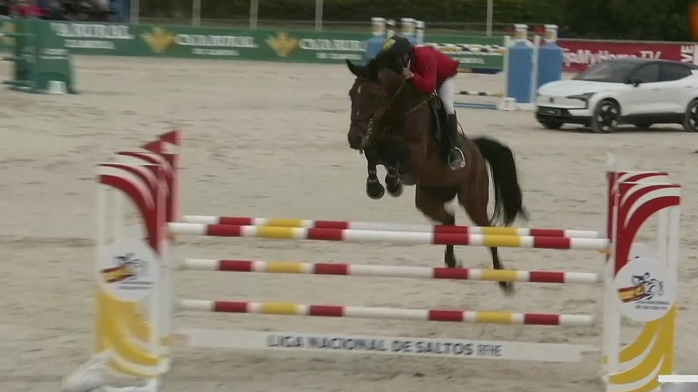

La Liga Nacional de Saltos regresa este mes con el CSN5* de Valladolid
La competición pucelana acogerá del 29 al 31 de mayo el segundo concurso puntuable de la temporada, tras el aplazamiento de la cita madrileña por el brote de rinoneumonitis en el Real Club de Campo Villa de Madrid.

La Real Sociedad Hípica de Valladolid retoma este fin de semana la actividad de la Liga Nacional de Saltos con un concurso de categoría 5* que reunirá a jinetes y amazonas de distintos niveles entre los días 29 y 31 de mayo. El evento, organizado junto a Oxer Sport, ofrecerá doce pruebas oficiales con recorridos que oscilarán entre el metro veinte de altura y el metro cincuenta, con capacidad para albergar hasta doscientos cincuenta caballos en sus instalaciones.
El programa arrancará el viernes con pruebas de uno veinte, uno treinta, uno treinta y cinco y uno cuarenta y cinco metros, mientras que el sábado continuará la competición con recorridos de hasta uno cuarenta y cinco metros. El domingo centrará la atención con la disputa de los dos Grandes Premios del fin de semana: el Gran Premio Verisure de uno cuarenta metros, puntuable para la Liga Plata, y el Gran Premio de uno cincuenta metros de la Liga Oro, Premio Excelentísimo Ayuntamiento de Valladolid-Trofeo Caja Rural de Zamora, que repartirá quince mil euros en premios con seis mil euros para el vencedor.
Las instalaciones vallisoletanas disponen de una pista principal exterior de noventa por sesenta metros sobre arena de sílice fibrada, además de zona de entrenamiento y pista cubierta para el trabajo previo de los caballos. La cita forma parte del calendario principal del salto de obstáculos español y será una nueva oportunidad para seguir sumando puntos en la clasificación de la temporada.
— Redacción de Hípica al Día